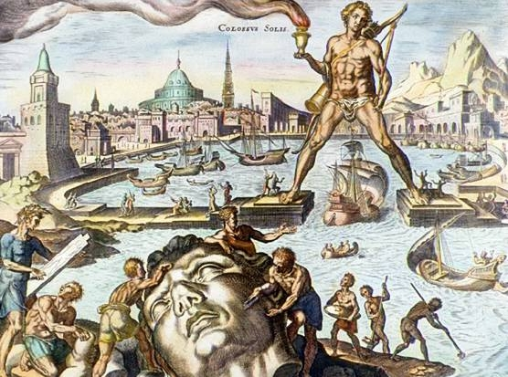

“The sun god Helios watched over Rhodes — not from the heavens, but from the harbor itself.”
“A city rose from ruin, and in bronze, it raised its pride to the sky.”

By Maarten van Heemskerck
The Colossus of Rhodes was a massive bronze statue of the sun god Helios, built around 292–280 B.C. on the Greek island of Rhodes. Standing about 33 meters (108 feet) tall, it was constructed to celebrate Rhodes’ victory over Cyprus and symbolized unity, strength, and protection.
Designed by the sculptor Chares of Lindos. It took 12 years to complete. Built using bronze plates over an iron framework, with stones added inside for stability. It stood at the entrance of the harbor, though not with legs apart (as myths suggest), but likely beside it.
The statue stood for only 56 years before an earthquake in 226 B.C. snapped it at the knees.
The Rhodians did not rebuild it, believing it offended the gods.
Even broken, the statue remained a tourist attraction for centuries — with people marveling at the massive fallen pieces.